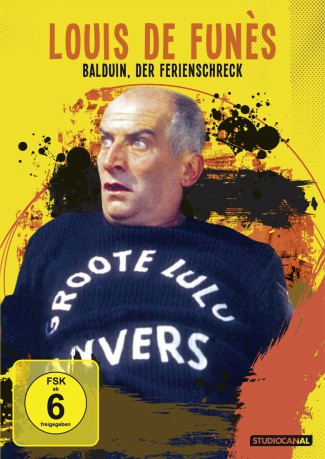

#4531 Balduin, der Ferienschreck
Alternativ: The Exchange Student (Englischer Titel)
 
 IMDB-Wertung: 6.6 / 10
IMDB-Wertung: 6.6 / 10  Metascore: 0
Metascore: 0 
Philippe, der Sohn des Schuldirektors Balduin Bosquier, hat Probleme in der Schule; insbesondere in Sprachen ist er ein lausiger Schüler. Daher beschließt der Vater, ihn in den Ferien zu einem Sprachkurs nach Schottland zu schicken. Der Filius hat jedoch andere Pläne: Er will zusammen mit Freunden auf einem Boot in der Seine herumschippern, daher schickt er einen Freund nach Schottland. Die hübsche Schülerin Shirley, die im Austausch nach Frankreich kommt, steht allerdings bald kurz davor, die ganze Sache zu enttarnen.
Jahr: 1967
Dauer: 89 Minuten
FSK: 6
Land: Frankreich Studio: Constantin FilmTonspuren:
Untertitel: Deutsch,
Auflösung: 1080p (1920x824) Größe: 6717 MB
Genre: Komödie
Regisseur: Jean Girault
Drehbuch: Pea Fröhlich
Soundtrack:
Darsteller:
 Louis de Funès als Charles Bosquier
Louis de Funès als Charles Bosquier Ferdy Mayne als MacFarrell
Ferdy Mayne als MacFarrell- Martine Kelly als Shirley MacFarrell
- François Leccia als Philippe Bosquier
- Olivier De Funès als Gérard Bosquier
 Claude Gensac als Isabelle Bosquier
Claude Gensac als Isabelle Bosquier- Maurice Risch als Stéphane Michonnet
 Jacques Dynam als Croizac, le livreur de charbon
Jacques Dynam als Croizac, le livreur de charbon Dominique Davray als Rose
Dominique Davray als Rose- Mario David als L'automobiliste
- Jean St. Clair als
- Christiane Muller als La bonne des Bosquier
- Denise Provence als La comtesse
- Françoise Girault als Une vacancière avec le chien
- Silvia Dionisio als Une vacancière avec le chien
 René Bouloc als Bargin
René Bouloc als Bargin- Jean-Pierre Bertrand als Christian
- Jacques Dublin als Claude
- Dominique Maurin als Michel
- Guy Grosso als Chastenet, un professeur
- Carlo Nell als Un professeur
- Daniel Bellus als Le comte
- Max Montavon als Morizot, un professeur
- Robert Destain als Le surveillant général
- Jacques Famery als
- Paul Faivre als Le propriétaire du poulailler
- Emile Prud'homme als Mimile
- Douglas Read als
- Colin Drake als Jenkins
- Jean Droze als Le jardinier
- Mary Boduin als
- Barbara Sommers als La préposée aux costumes
- Charles Lloyd Pack als
- Jean Falloux als L'ivrogne
- Billy Kearns als Le conducteur du car
- Joachim Westhoff als
- Percival Russel als Un policeman
- Brian Coburn als
- Henri Attal als Un marin au bistrot , uncredited
- Antoine Baud als Un marin au bistrot , uncredited
- Jackie Blanchot als Un marin au bistrot , uncredited
- Claude Carliez als Un marin au club nautique , uncredited
- Bernard Charlan als Le brigadier , uncredited
- Louise Chevalier als Petit rôle , uncredited
- Guy Delorme als Un marin au bistrot , uncredited
- Jack Jourdain als Un marin hollandais , uncredited
- Richard Larke als Un spectateur aux mariages , uncredited
- Bernard Le Coq als Jean-Christophe, un élève , uncredited
- Rudy Lenoir als Un professeur , uncredited
- Sylvain Levignac als Un marin hollandais , uncredited
Datei: X:\Person\Louis de Funès\Balduin, der Ferienschreck (1967, FSK6, 1920x824).mkv seit 09.10.2016
Festplatte: HD Collection-7+mehr(A-Z)+Person
 Es gibt insgesamt 33 Filme in der Gruppe 'Person\Louis de Funès'
Es gibt insgesamt 33 Filme in der Gruppe 'Person\Louis de Funès'